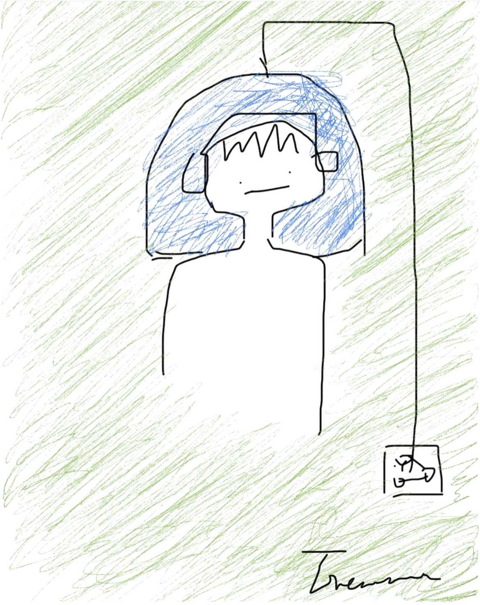

Genevra E.T.
I'm Genevra Guo, a physician-scientist with clinical training in medicine and a PhD in neurology, now completing an M.S. in biomedical engineering at Johns Hopkins.
My research spans clinical neuroscience, neuroimaging, and neural engineering. I'm especially curious about how the brain represents stories, memory, and meaning.
Outside research, I write, draw, photograph, and carve seals.
